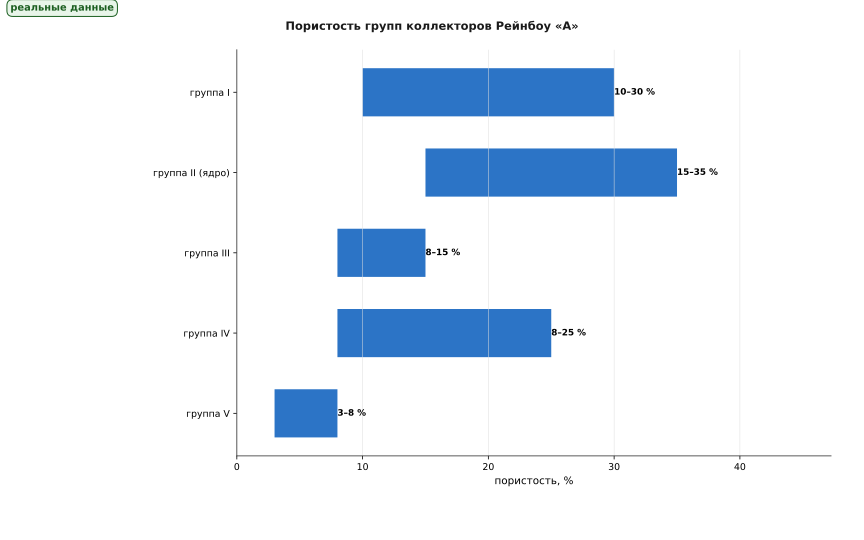

Путь › Где в породе пустоты и как устроен купол › Шаг 18 из 56
Свойства ядра и крыльев рифа Рейнбоу
В книге: «СТРОЕНИЕ РИФОВЫХ РЕЗЕРВУАРОВ» стр. 206–207
Опирается на: шаг 17 «Из чего состоит риф Рейнбоу «А»» (предпосылка), шаг 15 «Поры между кристаллами» (предпосылка), шаг 25 «Как читать карты фаций и пористости» (переход к данным)
Суть
В рифе Рейнбоу «А» коллекторские свойства распределены вслед за сменой фаций и пород.
Ядро из строматопоровых известняков — лучшие коллекторы: пористость 15–35 %, проницаемость до 30000·10⁻¹⁵ м².
Пористость разных групп перекрывается, поэтому группу коллектора определяют по паре пористость–проницаемость и по положению в рифе.
Пороговая идея. Сопоставляйте пористость и проницаемость вместе и учитывайте породу и положение. модель
Как это работает
Два разреза
Рис. 10.2 книги даёт два профильных разреза рифа Рейнбоу «А». Первый — литолого-фациальный, то есть по составу пород и фациям. Второй — по типам коллекторов. стр. 206
«Рис. 10.2. Профильные разрезы рифа Рейнбоу А, Канада [Langton, Chin, 1968]: а – литолого-фациальный, б – типов коллекторов.»
Какие породы различают
В легенде много известняков. Это мелкозернистые тонкослоистые и светлоокрашенные. А также микро- и тонкозернистые с обильными амфипорами — ветвящимися строматопороидеями. стр. 206
«Известняки: 1 – мелкозернистые тонкослоистые, 2 – мелкозернистые светлоокрашенные, 3 – микро- и тонкозернистые с обильными амфипорами»
Есть известняки с крупными обломками разных организмов и отдельно — с обломками массивных строматопороидей и кораллов. Отдельно выделены строматопоровые и коралловые известняки и мелко- и среднезернистые известковые песчаники. стр. 206
«4 – с крупными обломками разнообразных организмов, 5 – с крупными обломками массивных строматопороидей и кораллов»
«6 – строматопоровые, 7 – коралловые, 8 – известковые песчаники мелко- и среднезернистые»
Тёмноцветные известняки бывают с массивными кораллами или тонко- и мелкозернистые с обломками строматопороидей и кораллов. Ещё есть мелкозернистые с ветвистыми кораллами и тёмные микрозернистые с криноидеями — морскими лилиями. И тёмно-коричневые микрозернистые битуминозные известняки. стр. 206
«9 – темноцветные с массивными кораллами, 10 – темноцветные тонко- и мелкозернистые с обломками строматопороидей и кораллов»
«11 – мелкозернистые с ветвистыми кораллами, 12 – темноокрашенные микрозернистые с обильными криноидеями, 13 – темно-коричневые микрозернистые битуминозные.»
Пять групп коллекторов
Группа I: пористость 10–30 %, проницаемость 50–2000·10⁻¹⁵ м². Группа II: пористость 15–35 %, проницаемость 30–30000·10⁻¹⁵ м². Группа III: пористость 8–15 %, проницаемость (5–30)·10⁻¹⁵ м². стр. 206
«I – пористость 10–30 %; проницаемость 50–2000·10⁻¹⁵ м²»
«II – пористость 15–35 %, проницаемость 30–30000·10⁻¹⁵ м²»
«III – пористость 8–15 %, проницаемость (5–30)·10⁻¹⁵ м²»

Группа IV: пористость 8–25 %, проницаемость <50·10⁻¹⁵ м². Группа V: пористость 3–8 %, проницаемость <3·10⁻¹⁵ м². стр. 206
«IV – пористость 8–25 %, проницаемость <50·10⁻¹⁵ м²»
«V – пористость 3–8 %, проницаемость <3·10⁻¹⁵ м²»
Ядро и крылья
Коллекторские свойства распределены в соответствии с литолого-фациальной зональностью. Ядро сложено преимущественно строматопоровыми известняками. В нём пористость 15–35 % при проницаемости от 30 до 30000·10⁻¹⁵ м². стр. 207
«В соответствии с литолого-фациальной зональностью распределены коллекторские свойства.»
«В ядре, сложенном преимущественно строматопоровыми известняками»
«пористость составляет 15–35 % при проницаемости от 30 до 30000·10⁻¹⁵ м²»
На крыльях преобладают породы двух классов. У одного пористость 10–30 % и проницаемость (50–2000)·10⁻¹⁵ м². У другого пористость 8–25 % и проницаемость ниже 50·10⁻¹⁵ м². стр. 207
«в то время как на крыльях преобладают породы двух классов»
«с пористостью 10–30 % и проницаемостью (50–2000)·10⁻¹⁵ м²»
«пористостью 8–25 % и проницаемостью ниже 50·10⁻¹⁵ м²»
Нюанс
Автор отмечает и ещё более тесную связь коллекторских свойств с конкретными литологическими типами пород. А диапазоны пористости групп перекрываются: по одной пористости группу не определить. стр. 207
«При этом устанавливается и более тесная связь коллекторских свойств с литологическими типами пород.»
По шагам
Как читать два разреза Рейнбоу вместе
- На литолого-фациальном разрезе найдите ядро и крылья и их породы. стр. 206–207
- На разрезе типов коллекторов найдите группы в тех же местах. стр. 206
- Сравнивайте пористость и проницаемость вместе, учитывая тип породы. стр. 207
Разбор примеров из книги
Прочитайте оба разреза Рейнбоу А стр. 206
Условие. Автор сравнивает ядро и крылья одного рифового массива.
- Найти ядро из преимущественно строматопоровых известняков: пористость 15–35 %, проницаемость от 30 до 30000·10⁻¹⁵ м².
- На крыльях выделить класс с пористостью 10–30 % и проницаемостью (50–2000)·10⁻¹⁵ м².
- Выделить второй класс с пористостью 8–25 % и проницаемостью ниже 50·10⁻¹⁵ м².
Итог. Свойства меняются вместе с фациями; отмечена ещё более тесная связь с типами пород.
Решение на данных
Какая это зона рифа Рейнбоу?
- Тип породы
- Пористость и проницаемость вместе
Сопоставить породу и пару свойств с группами рис. 10.2; одной пористости мало, диапазоны перекрываются. стр. 207
Ядро (группа II) или крылья (группы I и IV) — или вывод невозможен по одной пористости.
Потренируйтесь
Дано: Строматопоровые известняки, пористость 15–35 %, проницаемость 30–30000·10⁻¹⁵ м² (стр. 207)
Так автор описывает ядро Рейнбоу «А».
Дано: Пористость 8–25 %, проницаемость ниже 50·10⁻¹⁵ м² (стр. 207)
Это второй преобладающий на крыльях класс (группа IV).
Дано: Известна только пористость, около 20 % (модель)
Диапазоны пористости групп I, II и IV перекрываются; нужна проницаемость и тип породы.
Цифры и условия
- Ядро: пористость 15–35 %, проницаемость 30–30000·10⁻¹⁵ м². стр. 207
- Крылья, класс 1: пористость 10–30 %, проницаемость (50–2000)·10⁻¹⁵ м². стр. 207
- Крылья, класс 2: пористость 8–25 %, проницаемость ниже 50·10⁻¹⁵ м². стр. 207
- Худшая группа V: пористость 3–8 %, проницаемость <3·10⁻¹⁵ м². стр. 206
Что это значит для данных модель
Храните диапазоны обоих свойств и признак положения на разрезе.
- Вход
- Пара разрезов и легенды; описания пород.
- Выход
- Соответствие зоны, породы и диапазонов свойств.
- Где ломается
- По одному значению пористости группу нельзя однозначно установить там, где диапазоны перекрываются.
- гипотеза Проверить, добавляет ли тип породы различимость классов в областях перекрытия.
Где здесь ручной труд специалиста
- Входные данные
- Легенды разрезов, позиции наблюдений и свойства.
- Ручные шаги
- Сверить группы с литологией на обоих разрезах, сохранить оба диапазона и строгие границы.
- Точки суждения
- Различать ли два класса при перекрывающейся пористости?
- Время
- Основное время уходит на согласование разметок разрезов.
- Типичные ошибки
- Сравнивать классы по одному числу или менять знак строгой границы.
Аналогия модель
Два разреза похожи на два слоя карты: одна координата, разные признаки.
Где аналогия перестаёт работать: Совпадение границ на карте не само по себе доказательство причинной связи.
Глубже
Почему среднее мешает модель
Одна средняя пористость скрывает ширину диапазона. Различия в проницаемости при близкой пористости важнее для вывода о движении жидкости.
Рисунки книги к этому шагу
- Рис. 10.2. Рис. 10.2. Профильные разрезы рифа Рейнбоу А, Канада [Langton, Chin, 1968]: а – литолого-фациальный, б – типов коллекторов. Известняки: 1 – мелкозернистые тонкослоистые, 2 – мелкозернистые светлоокрашенные, 3 – микро- и тонкозернистые с обильными амфипорами, 4 – с крупными обломками разнообразных организмов, 5 – с крупными обломками массивных строматопороидей и кораллов, 6 – строматопоровые, 7 – коралловые, 8 – известковые песчаники мелко- и среднезернистые, 9 – темноцветные с массивными кораллами, 10 – темноцветные тонко- и мелкозернистые с обломками строматопороидей и кораллов, 11 – мелкозернистые с ветвистыми кораллами, 12 – темноокрашенные микрозернистые с обильными криноидеями, 13 – темно-коричневые микрозернистые битуминозные. Группы коллекторов: I – пористость 10–30 %; проницаемость 50–2000·10⁻¹⁵ м²; II – пористость 15–35 %, проницаемость 30–30000·10⁻¹⁵ м²; III – пористость 8–15 %, проницаемость (5–30)·10⁻¹⁵ м²; IV – пористость 8–25 %, проницаемость <50·10⁻¹⁵ м²; V – пористость 3–8 %, проницаемость <3·10⁻¹⁵ м² стр. 206
Новые понятия
- риф (reef)
- Органогенное карбонатное тело, возвышавшееся над окружающим дном. модель
- резервуар (reservoir)
- Тело из пород, в пустотах которых могут находиться и перемещаться жидкости или газы. модель
- профильный разрез
- Изображение строения объекта в вертикальной плоскости вдоль заданной линии. модель
- фация (facies)
- Горная порода или группа пород с характерными признаками обстановки их образования. модель
- литология (lithology)
- Состав и строение породы. модель
- литолого-фациальная зональность
- Смена состава пород и обстановок их образования по площади или разрезу. модель
- пористость (porosity)
- Доля объёма породы, занятая пустотами. модель
- проницаемость (permeability)
- Способность породы пропускать через себя жидкость или газ. модель
- коллекторские свойства
- Свойства породы, определяющие её способность вмещать и пропускать жидкость или газ. модель
- строматопоровый известняк
- Известняк с остатками строматопороидей — древних рифостроящих организмов. модель
- ампфипоры
- Ветвящиеся ископаемые строматопороидеи. модель
- криноидеи
- Морские лилии; их скелетные обломки встречаются в известняках. модель
- битуминозный известняк
- Известняк с битуминозным органическим веществом. модель
- песчаник
- Порода из сцементированных зёрен песка. модель
- ядро
- Центральная часть рифового массива. модель
- крылья
- Боковые части массива. модель
Проверь себя
·10⁻¹⁵ м²
Верный ответ: 30000 ·10⁻¹⁵ м²
В ядре проницаемость от 30 до 30000·10⁻¹⁵ м² при пористости 15–35 %. Где это в тексте (стр. 207) →
Верный ответ: Строматопоровые известняки
Ядро сложено преимущественно строматопоровыми известняками и имеет лучшие свойства. Где это в тексте (стр. 207) →
Верный ответ: Диапазоны пористости групп перекрываются
Например, пористость около 20 % попадает в группы I, II и IV; различает их проницаемость и порода. Где это в тексте (стр. 207) →
Источник
Все утверждения шага с дословной цитатой автора и страницей книги (по PDF).
На рисунке приведены два профильных разреза Рейнбоу А: литолого-фациальный и разрез типов коллекторов. наблюдение
«Рис. 10.2. Профильные разрезы рифа Рейнбоу А, Канада [Langton, Chin, 1968]: а – литолого-фациальный, б – типов коллекторов.»
В легенде выделены мелкозернистые тонкослоистые и светлоокрашенные известняки, а также микро- и тонкозернистые известняки с обильными амфипорами. наблюдение
«Известняки: 1 – мелкозернистые тонкослоистые, 2 – мелкозернистые светлоокрашенные, 3 – микро- и тонкозернистые с обильными амфипорами»
Два типа известняков различают по крупным обломкам: разных организмов или именно массивных строматопороидей и кораллов. наблюдение
«4 – с крупными обломками разнообразных организмов, 5 – с крупными обломками массивных строматопороидей и кораллов»
Отдельно обозначены строматопоровые и коралловые известняки, а также мелко- и среднезернистые известковые песчаники. наблюдение
«6 – строматопоровые, 7 – коралловые, 8 – известковые песчаники мелко- и среднезернистые»
Два тёмноцветных известняка различают по массивным кораллам либо по обломкам строматопороидей и кораллов в тонко- и мелкозернистой породе. наблюдение
«9 – темноцветные с массивными кораллами, 10 – темноцветные тонко- и мелкозернистые с обломками строматопороидей и кораллов»
Ещё выделены мелкозернистые известняки с ветвистыми кораллами, тёмные микрозернистые с криноидеями и тёмно-коричневые микрозернистые битуминозные. наблюдение
«11 – мелкозернистые с ветвистыми кораллами, 12 – темноокрашенные микрозернистые с обильными криноидеями, 13 – темно-коричневые микрозернистые битуминозные.»
Группа I: пористость 10–30 %, проницаемость 50–2000·10⁻¹⁵ м². наблюдение
«I – пористость 10–30 %; проницаемость 50–2000·10⁻¹⁵ м²»
Группа II: пористость 15–35 %, проницаемость 30–30000·10⁻¹⁵ м². наблюдение
«II – пористость 15–35 %, проницаемость 30–30000·10⁻¹⁵ м²»
Группа III: пористость 8–15 %, проницаемость (5–30)·10⁻¹⁵ м². наблюдение
«III – пористость 8–15 %, проницаемость (5–30)·10⁻¹⁵ м²»
Группа IV: пористость 8–25 %, проницаемость <50·10⁻¹⁵ м². наблюдение
«IV – пористость 8–25 %, проницаемость <50·10⁻¹⁵ м²»
Группа V: пористость 3–8 %, проницаемость <3·10⁻¹⁵ м². наблюдение
«V – пористость 3–8 %, проницаемость <3·10⁻¹⁵ м²»
Коллекторские свойства рифа следуют литолого-фациальной зональности. наблюдение
«В соответствии с литолого-фациальной зональностью распределены коллекторские свойства.»
Ядро преимущественно состоит из строматопоровых известняков. наблюдение
«В ядре, сложенном преимущественно строматопоровыми известняками»
В ядре пористость 15–35 %, а проницаемость от 30 до 30000·10⁻¹⁵ м². наблюдение
«пористость составляет 15–35 % при проницаемости от 30 до 30000·10⁻¹⁵ м²»
На крыльях преобладают породы двух классов. наблюдение
«в то время как на крыльях преобладают породы двух классов»
Один класс на крыльях: пористость 10–30 %, проницаемость (50–2000)·10⁻¹⁵ м². наблюдение
«с пористостью 10–30 % и проницаемостью (50–2000)·10⁻¹⁵ м²»
Другой класс на крыльях: пористость 8–25 %, проницаемость ниже 50·10⁻¹⁵ м². наблюдение
«пористостью 8–25 % и проницаемостью ниже 50·10⁻¹⁵ м²»
Отмечена более тесная связь коллекторских свойств с конкретными литологическими типами пород. наблюдение
«При этом устанавливается и более тесная связь коллекторских свойств с литологическими типами пород.»